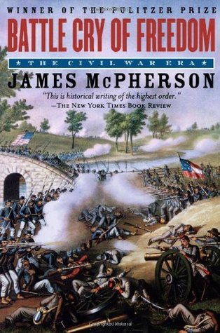

Battle Cry of Freedom
⭐️⭐️⭐️⭐️
Format: audio (39 hours 38 minutes)
As a Civil War Era book goes, this one is great, but for a Civil War book (not the era), it's just alright. I enjoyed how well this book provided cultural insights, surrounding occurrences, and context to the US (and world, for that matter) at the time of the Civil War. The flow of the book was perfect, and never once did I lose interest, despite it's lack of war details. It would be good as an accompaniment to a Civil War book, but not as a stand-alone - if you're looking for a war-centric book. However, if you're not that interested in the war itself, but more interested in the overall happenings of the nation at this time - A+.
P.S. The South loses, FYI.
- Previously: Age of Legend
- Next: Sunreach